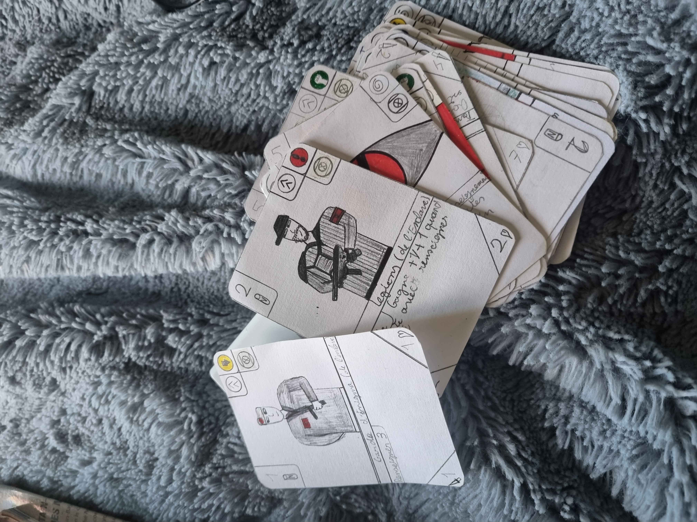

July 2021 Castration of corn in Chassenet, Thuret, Puy de dôme in Auvergne.

July 2024 Castration of corn in Chassenet, Thuret, Puy de dôme in Auvergne.
July 2012 Family harvest in Ris, Puy de dôme, Auvergne.

In 2019, I completed an internship in Thuret in the public maintenance services, I helped clean the premises, maintain the flora and trees in my village and I helped design flower boxes and the layout of these.
SAE 1.01, Management internship.
A team compound of Léo Grisard-Dubois and Thomas Bouquier.
This project aims to develop a command-line application for managing internships in a fictitious environment. The application will be designed to run in a computer terminal and will be written in the C programming language. The application will be divided into three main sections, each serving a different purpose and user group. The first section will be devoted to the management of students. This section will allow students to create a new profile and submit internship requests. Students will be able to view their current internship status, update their personal information, and communicate with internship managers regarding their application. The second section will be dedicated to the management of internship managers. This section will allow managers to create new internships, review internship requests, and communicate with students regarding their applications. Managers will also be able to promulgate internships, which means they can officially announce and assign internships to students. This section will provide managers with a comprehensive view of all internships, including their status and the students assigned to them. The third and final section will be reserved for the jury. The jury will be responsible for evaluating the internships and assigning grades to the students. This section will allow the jury to view the internship details, including the student's work and any feedback from the internship manager. The jury will also have the ability to enter grades and submit them for official recording. Overall, this command-line application will provide a streamlined and efficient way to manage internships in a fictitious environment. By dividing the application into three distinct sections, it will be easy for students, managers, and jurors to navigate and use the application to perform their respective tasks. The use of the C programming language will ensure that the application is fast, reliable, and compatible with a wide range of computer systems.
The result it the grade at the end of the project.
SAE 1.02, Comparison of algorithmic approaches.
A team compound of Léo Grisard-Dubois and Thomas Bouquier.
This project aims to develop a command-line apllication game. The application will be designed to run in a computer terminal and will be written in the C programming language. The game takes place that we have a menu which asks for the player's nickname and the associated password, this gives access to a menu which has the option of launching a game with the basic campaign, of creating a new world to add to a campaign, look at the scores sorted by player name or by increasing score, search for a player by name and then there is an option to play a custom campaign with the world added before.
The result it the grade at the end of the project.
SAE 1.03, Installation of a workstation for development.
This work is done alone.
This SAÉ allows you to experience workstation installation missions under Linux, as well as to become familiar with maintenance. The list of knowledge is provided and is divided into two parts corresponding to each period. All of the acquired procedures must be able to be automated and must therefore not depend on a graphical tool.
The result it the grade at the end of the project.
SAE 1.04 Database
Our group: Grisard-Dubois Léo, Fortune Gregoire, Bouquier Thomas
Objectives of the SAÉ: The first objective of this SAÉ is to study and then set up a database covering part of a company's information system. This SAÉ allows a first contact with the formalization and implementation of a database. The second objective is to analyze the economic issues of this data. Database Part A report in .pdf format containing: A presentation summarized in a few lines of the company with its type of activity, The conceptual data model (MCD) by clearly specifying the identifiers, The logical data model (LDM) by clearly specifying the primary keys and foreign keys. The.sql script allowing you to delete, create, fill (dataset), display the tables and the queries allowing you to answer the questions asked in the subject: script for creating tables script for inserts script for requests script for failing inserts script that calls others The dataset to use. Economy part Answer the following questions in the report in productionRendu: Common area: Present the characteristics of the company in which you work and the market in which it operates. List the categories of data that you process by classifying them according to the typologies seen in progress. At what stage of the life cycle of this data do you intervene? Who are the economic actors involved upstream and downstream of your activity? Individual part: 4. Summarize in two or three sentences why your work on this data is important to the company you work for.
The result it the grade at the end of the project.
SAE 1.05 Requirements collection.
Group: Grisard-Dubois Léo, Bouquier Thomas, Gillet Matteo.
The objective of this SAÉ is to show our ability to collect needs from a client and analyze them to present your understanding. It therefore uses the teaching resources “Development of web interfaces” for the ability to present needs to a client, “Project and organizational management” for project management and “Basics of communication” for communication with the customer.
The result it the grade at the end of the project.
S.A.E. S1-06: DISCOVERY OF THE ECONOMIC AND ECOLOGICAL ENVIRONMENT
Our group: Grisard-Dubois Léo, Fortune Gregoire, Bouquier Thomas.
OBJECTIVE OF THE S.A.É. This involves carrying out a digital presentation of the economic and ecological positioning of a company SUBJECT: On its website, the company for which we created the S.A.É. 1-04 (creation of a database data) wishes to add a presentation of its economic positioning and its impact on the environment, intended for economic actors affected by its activity. She asks us to help her in this task.
The result it the grade at the end of the project.
Apokaliptyca Card Game.
Work alone, begin seven years ago.
This project is a card game about a world post-apo with numerous charracters and faction. I have three differents version of this card game and one right one in work. This card game have 8 factions right one and each have a unique theme, history, politicals system and in the game an unique style of gameplay and main characters when you play.
Personal profits and creativity.


{kind=link}